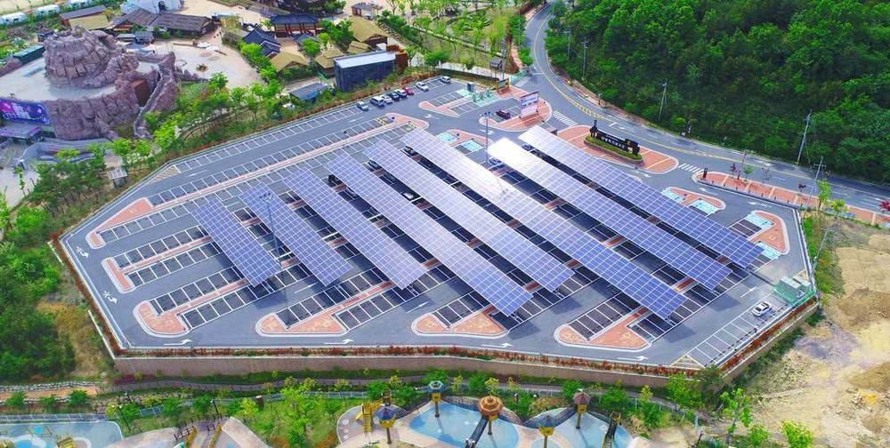

강화군민해누리협동조합 출범…공영주차장·공공 유휴부지 태양광으로 '군민 참여형 햇빛소득' 추진

군민이 발전과 수익의 주체로…지자체·공공기관과 부지 발굴, 수익 배분·지역 환원 방안 마련 예정
인천 강화군에서 군민이 직접 재생에너지를 만들고 그 수익을 지역과 나누겠다는 에너지 협동조합이 문을 열었다. 신웅식 초대 이사장이 이끄는 강화군민해누리협동조합은 군내 공영주차장과 공공 유휴부지에 태양광발전소를 세우는 것을 첫 사업으로 삼았다. 주차장 태양광은 주차 기능을 그대로 두면서 전기를 만들고 차량에 그늘을 주는 방식으로, 조합은 쓰임새가 낮은 공공시설 부지도 찾아 단계적으로 늘릴 계획이다. 조합은 발전 수익이 특정 사업자가 아닌 조합원과 지역사회에 돌아가도록 투명한 배분·환원 방안을 마련하고, 지자체·공공기관과 협의해 대상지를 고르겠다고 밝혔다. 다만 실제 설치까지는 부지 사용 허가와 인허가, 계통 연결 조건을 하나하나 따져야 하는 과제가 남아 있다.
시민에너지 관점
독일에서는 900곳이 넘는 에너지협동조합이 주민 출자로 발전소를 운영하며 수익을 마을에 돌려 왔다. 공영주차장은 새로 땅을 깎지 않아 경관·환경 갈등이 적고, 공공이 부지를 내주면 수익이 외부 자본이 아닌 주민에게 남는다. 부지·계통이 막힐 수 있다는 걱정은 군이 공공부지 목록을 먼저 공개하고 한전과 연결 일정을 함께 잡으면 줄일 수 있다. 강화군과 군의회는 조합이 첫 발전소를 빨리 세울 수 있도록 공영주차장 사용 절차부터 열어야 한다.
출처: 얼리어답터뉴스(속보라인뉴스 제공) 2026-11-15 속보라인뉴스 원문 보기
江華郡民ヘヌリ協同組合が発足…公営駐車場・公共遊休地の太陽光で「郡民参加型の日差し所得」推進
郡民が発電と収益の主体に…自治体・公共機関と用地発掘、収益配分・地域還元策を準備へ
仁川市江華郡で、郡民が自ら再生可能エネルギーをつくり、その収益を地域と分かち合うエネルギー協同組合が発足した。シン・ウンシク初代理事長が率いる江華郡民ヘヌリ協同組合は、郡内の公営駐車場と公共遊休地に太陽光発電所を建てることを最初の事業に据えた。駐車場太陽光は駐車機能をそのまま残しながら発電し、車に日陰をつくる方式で、組合は利用度の低い公共施設の用地も探して段階的に広げる計画だ。組合は発電収益が特定の事業者ではなく組合員と地域社会に戻るよう、透明な配分・還元策を設け、自治体・公共機関と協議して対象地を選ぶとしている。ただ実際の設置までには、用地使用の許可や認許可、系統接続の条件を一つずつ詰める課題が残っている。
市民エネルギーの視点
ドイツでは900を超えるエネルギー協同組合が住民出資で発電所を運営し、収益を地域に還元してきた。公営駐車場は新たに土地を削らないため景観・環境をめぐる対立が少なく、公共が用地を提供すれば収益は外部資本ではなく住民の手元に残る。用地や系統が壁になるという懸念は、郡が公共用地のリストを先に公開し、韓国電力と接続日程を共に組めば減らせる。江華郡と郡議会は、組合が最初の発電所を早く建てられるよう、公営駐車場の使用手続きから開くべきだ。
出典: 얼리어답터뉴스(속보라인뉴스 제공) 2026-11-15 속보라인뉴스 原文を読む
江华郡民海努里合作社成立…以公营停车场和公共闲置地太阳能推动“郡民参与型阳光收入”
郡民成为发电与收益主体…与地方政府、公共机构共同发掘用地，将制定收益分配与地区回馈方案
仁川江华郡成立了一家由郡民亲自生产可再生能源、并与地区分享收益的能源合作社。由首任理事长申雄植领导的江华郡民海努里合作社，把在郡内公营停车场和公共闲置地建设太阳能电站作为首个项目。停车场太阳能可在保留停车功能的同时发电，并为车辆遮阴；合作社还计划寻找利用率低的公共设施用地，逐步扩大规模。合作社表示，将制定透明的分配和回馈方案，使发电收益回到社员和地区社会，而不是特定企业，并将与地方政府和公共机构协商选定项目地点。不过，在真正安装之前，用地使用许可、行政审批和并网条件等问题仍需逐一解决。
市民能源视角
德国有900多家能源合作社依靠居民出资经营电站，并把收益留在当地。公营停车场无需开挖新土地，景观与环境冲突较少；只要公共部门提供用地，收益就会留在居民手中，而不是流向外部资本。对于用地和电网可能受阻的担忧，只要郡政府先公开公共用地清单，并与韩国电力公司共同制定并网时间表，就能减轻。江华郡和郡议会应从开放公营停车场使用程序做起，让合作社尽快建成第一座电站。
来源: 얼리어답터뉴스(속보라인뉴스 제공) 2026-11-15 속보라인뉴스 查看原文
Ganghwa residents launch Haenuri energy co-op to put solar on public car parks and idle land
Residents to own generation and returns; co-op to work with local government on sites and a transparent profit-sharing plan
An energy cooperative that lets residents of Ganghwa County, Incheon, produce renewable power themselves and share the returns with the community has been launched. The Ganghwa Residents' Haenuri Cooperative, led by founding chair Shin Woong-sik, has made solar plants on public car parks and idle public land its first project. Car-park solar generates electricity while keeping the spaces usable and shading vehicles, and the co-op plans to expand step by step to under-used public sites. It says it will set up a transparent scheme so that profits flow to members and the community rather than a single developer, and will choose sites in consultation with the county and public agencies. Before anything is built, however, land-use approval, permits and grid-connection terms still have to be worked out one by one.
Citizen Energy View
In Germany, more than 900 energy cooperatives run power plants on residents' investments and keep the income in their towns. Public car parks need no new land clearing, so landscape and environmental conflicts are fewer, and when the public sector provides the site, the returns stay with residents instead of outside capital. Worries about land or grid bottlenecks can be eased if the county publishes a list of public sites first and sets connection timelines together with KEPCO. Ganghwa County and its council should start by opening up the procedure for using public car parks so the co-op can build its first plant quickly.
Source: 얼리어답터뉴스(속보라인뉴스 제공) 2026-11-15 속보라인뉴스 Read the original